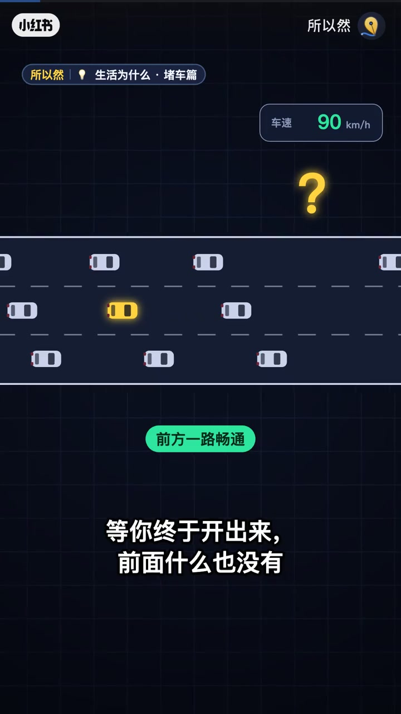
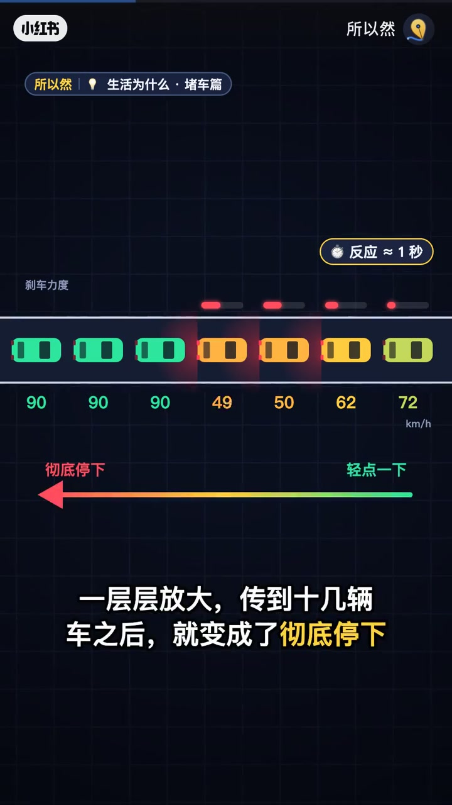
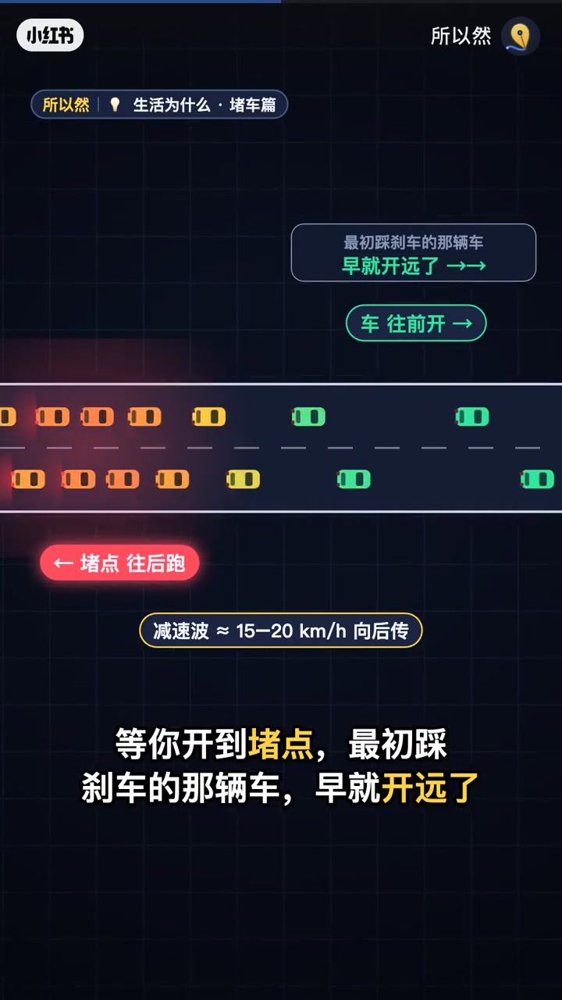
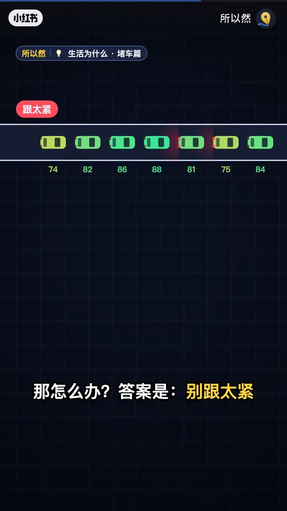
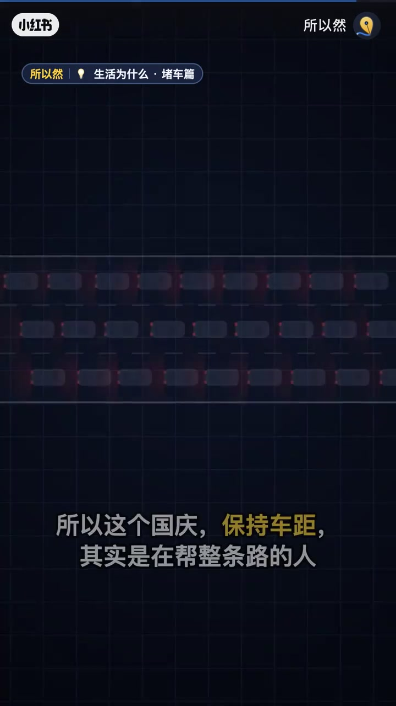

内容要点
知识结构
[00:00→00:25]
现象
高速没事故也会堵，形成走走停停。
[00:25→01:10]
放大机制
轻刹经约1秒反应时间向后传播，力度被放大到停车。
[01:10→01:31]
行动
保持车距、平稳驾驶，减少制造拥堵波。
总结
幽灵堵车是刹车波被反应时间放大的结果；你稳一点，整条路都受益。
口播转录很少；机制与数据以动画标注与作者文案为准。
图文实录
没事故也会堵
00:00 – 00:25
开场立住「幽灵堵车」现象：国庆高速常见，却不一定有事故或施工。

[00:09]开场：高速没事故也会走走停停
Opening: highway stop-and-go without an accident
轻刹如何变成停车波
00:25 – 01:10
动画显示车队速度从90层层降到停车；标注反应约1秒、刹车力度从轻点放大到彻底停下。

[00:27]一层层放大：轻点刹车传到后方变停车
Amplification: a light brake becomes a full stop downstream

[00:46]拥堵波向后传播的动画示意
Animation of a congestion wave traveling backward
你能做的两件事
01:10 – 01:31
文案行动：保持合理车距、平稳驾驶。少制造不必要的刹车，就是在削弱幽灵堵车。

[01:04]对策：车距+平稳，减少制造刹车波
Tip: gap + smooth driving to avoid making brake waves

[01:22]收束：每个人的驾驶都影响整条路
Close: every driver’s behavior affects the whole road